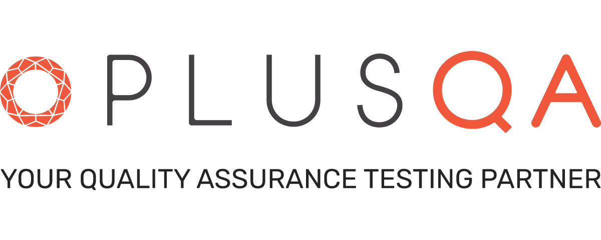

My current engagement is on an enterprise cloud storage platform serving over 100 million users, where the bulk of my work is test automation — both writing the automated coverage and standing up the setup it runs on. Working at this scale means a regression that slips through does not affect a handful of users, it affects millions of people's files, so the value of automation here is less about speed than about making sure the same checks run the same way every time, rather than depending on who happened to test that build.
Alongside the automation I design and maintain the test cases that define what coverage actually means for my area — mapping out the behaviour that matters, identifying the gaps, and keeping the suite current as features change underneath it. A test case nobody can follow, or one that passes without really proving anything, is worse than no test at all, so I put real attention into making them precise and readable for whoever picks them up next.
A large share of that coverage sits below the interface. API testing lets me verify behaviour directly at the service layer, well before it surfaces in a client, and I spend significant time on the data and backend side — confirming that what the system stores, returns and syncs is actually correct, not merely that the screen looks right. On a storage product that distinction is the whole job: the interface can be perfect while the data underneath it is quietly wrong, and that is exactly the class of problem that is most expensive to find late.

PLUS QA is a software quality assurance company founded in 2008 in Portland, Oregon, describing itself as "your quality assurance testing partner." Over more than eighteen years it has grown organically to a team of 70+, all based in the United States, serving 100+ clients from a test lab holding 600+ real devices. Its stated mission is to "facilitate innovation and ensure positive app experiences through quality assurance testing." It is a minority-owned business, and treats the diversity of its team as a strength rather than a box to tick.
The work spans functionality, device compatibility, accessibility, usability, localization, payment and API testing, along with test automation and fully managed testing services, across websites, mobile apps, AR/VR, IoT and e-commerce. What stands out to me is the deliberate choice not to outsource — the company has built a homegrown team instead, which shows in how much context people carry about the products they test rather than treating each build as an isolated pass.
Joining PLUS QA moved me further toward the technical side of QA than my previous roles had. Where a lot of my earlier work was exploratory testing, investigation and documentation, my focus here is automation, coverage design and testing the layers underneath the interface — which is the direction I wanted to grow in, and a good fit for the kind of problems I enjoy most.